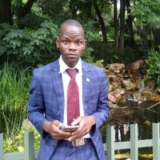

Profile
Independent and reliable professional with strong computer literacy and typing skills.
Experienced in transcribing, maintaining accurate records, and utilizing Microsoft Office,
bookkeeping, and database tools. Proficient in front-end web development and committed to
achieving sustainability and growth within the workforce.
Education
- Applied Business Management – Brigham Young University-Idaho (In Progress)
- Diploma in Cybersecurity
- Certificate in Information Management
- JavaScript Programming Certificate
- Database Diploma Certificate – Completed 2023
- Pathway Worldwide Certificate
- Diploma of Advanced Competencies – The Church of Jesus Christ of Latter-day Saints
- Basic Home Electrical Wiring – Andrew Slabbert Property Maintenance
- Basic Vehicle Maintenance – Williams Hunt Durban
- Leadership Certificate – South Africa Durban Mission
Work Experience
Web Developer – Hamba Project
- Developed and maintained front-end components using HTML, CSS, and JavaScript.
- Collaborated with a remote team to build features aligned with project requirements.
- Ensured responsive, cross-browser compatibility and optimized performance.
- Contributed to GitHub-hosted codebase and participated in code reviews.
Supervisor – Hotel Nieu, Pretoria (May 2020 – Present)
- Managed customer interactions with a professional, friendly approach.
- Mentored junior staff for improved service delivery.
- Resolved operational issues promptly.
- Scheduled maintenance and organized business operations.
Sales Assistant (Apr 2017 – Aug 2017)
- Maintained product displays and performed stocktaking.
- Handled customer service and cash/card payments.
Sales Agent – Credical Marketing (Jan 2017 – Mar 2017)
- Trained new recruits and attended daily sales training.
- Opened credit accounts and monitored performance.
Storeroom Manager – Dunga General Suppliers (Jul 2015 – Nov 2016)
- Handled stock and managed technical team.
- Performed monthly inventory and cash reconciliation.
Sales Clerk – ADMARC Malawi (Oct 2012 – Jan 2013)
- Managed stock, supported farmers, and prepared reports/payments.
Volunteer Experience
- Ward Clerk – The Church of Jesus Christ of Latter-day Saints (2020 – Present)
- Sunday School President – Pretoria Ward (2018 – 2020)
- District Seminary Leader – Malawi District (2016)
- Branch Executive Secretary – Malawi (2015 – 2016)
- Full-Time Missionary – South Africa (2013 – 2015)